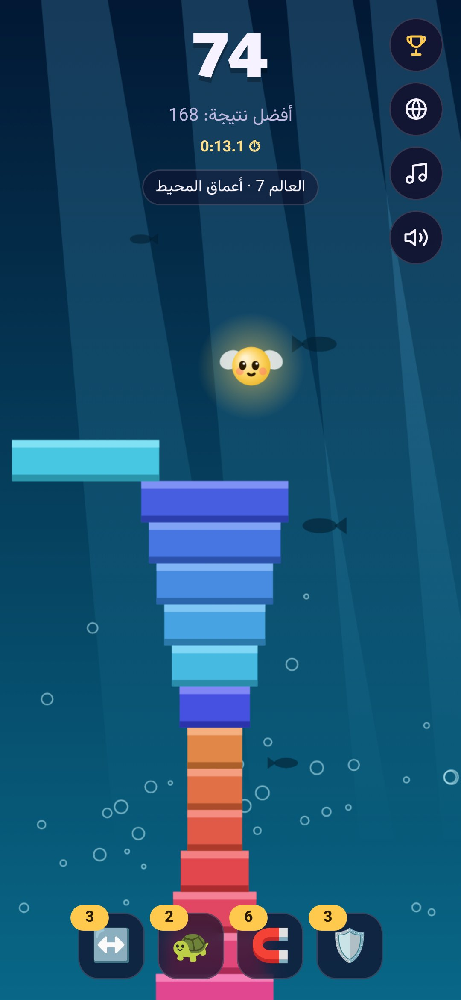
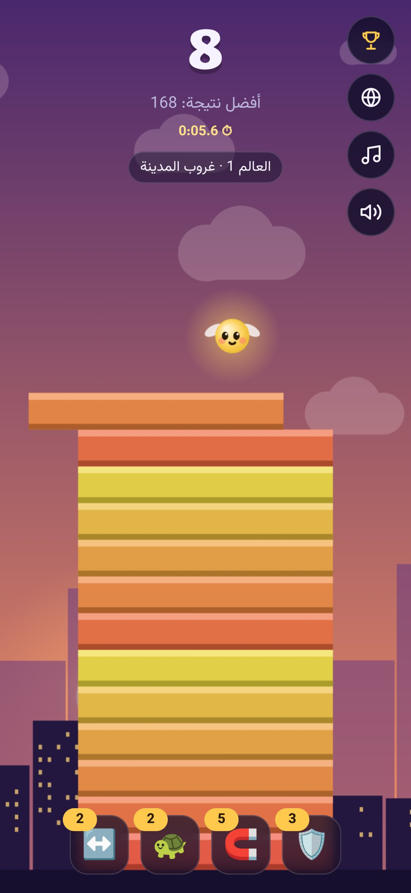
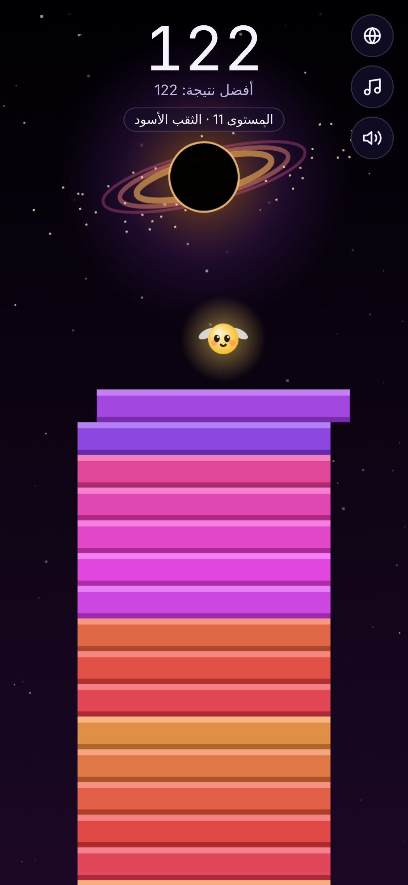
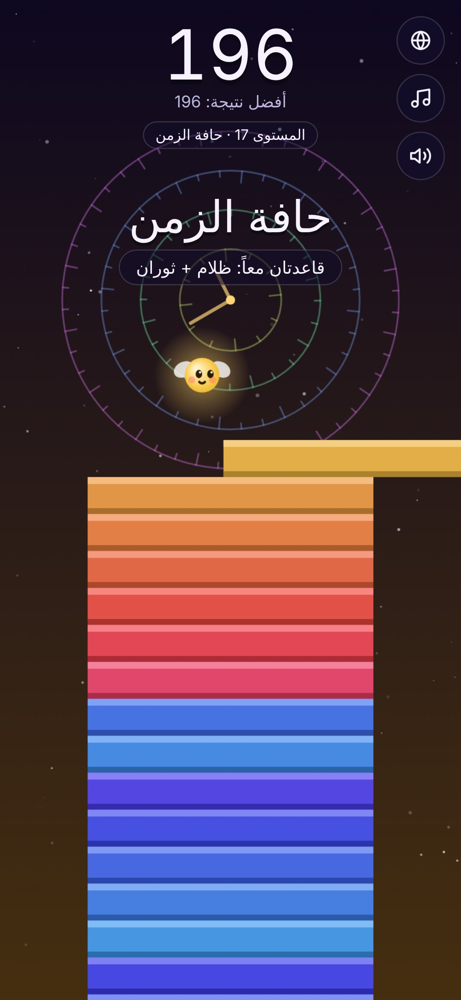

Burji
ابنِ برجك نحو السماء
لمسة واحدة تُسقط القطعة. ما يزيد يُقطع، وكل بضعة طوابق تدخل عالماً جديداً بقاعدة جديدة، من غروب المدينة إلى حافة الزمن.
قريباً على Android وiOS

كيف تلعب؟
تتعلمها في ثانية، وتحتاج أياماً لتصل إلى العالم الأخير.
المس لتُسقط
القطعة تتحرك يميناً ويساراً. المس الشاشة في اللحظة المناسبة.
طابِق الحواف
الجزء الزائد يسقط، واللمسات المثالية المتتالية تكبّر القطعة من جديد.
اصعد للعوالم
كل عالم يغيّر القواعد: رياح، ظلام، جليد، مرايا، ثقب أسود… وأكثر.
لماذا ستعود كل يوم
Burji لعبة مصممة لتلعبها مع من تعرف. الميزات المعلّمة «قريباً» تصل قريباً.
19 عالماً
لكل عالم ألوانه وموسيقاه وقاعدته الخاصة، وفي القمة «العُلا» و«اللانهاية»: ثلاث قواعد معاً ولا مساعدات، واللانهاية لا تنتهي أبداً.
تحدَّ أصدقاءك
أرسل رقمك برابط على واتساب، ويظهر خط هدفك عند صديقك وهو يلعب.
مجموعات واتساب قريباً
ترتيب خاص لعائلتك أو صفّك أو أصدقائك، يتجدد كل أسبوع.
سباق السرعة
من يصل للطابق 25 أسرع؟ سرعتك تظهر أثناء اللعب، ولوحة الأسرع ولقب «البرق» قريباً.
ألقاب تنتقل قريباً
الأسطورة، ملك البرج، بطل اليوم. إذا تجاوزك أحد، ينتقل لقبك إليه.
تحدٍّ يومي
قاعدة جديدة كل يوم، ونفس التحدي للجميع حتى منتصف الليل بتوقيت بغداد.
العوالم التسعة عشر
كم عالماً ستصل؟


